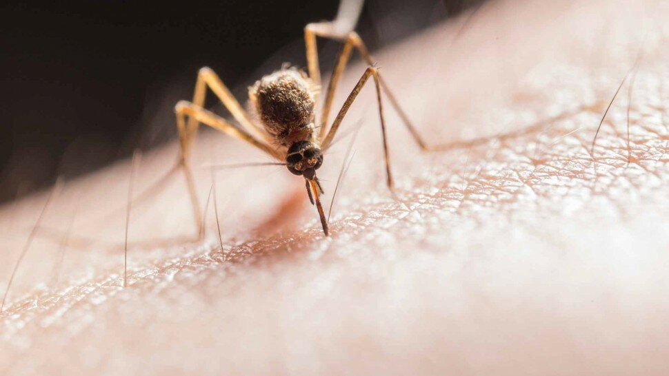

Comment reconnaitre et traiter une piqûre d'insecte ?

La forme que prend une morsure ou une piqûre dépend du type d’insecte. Que l’on soit dans l'eau, sur un sentier de montagne ou dans un jardin, la faune que l’on rencontre a des moyens de se protéger et de protéger son territoire. Les insectes, tels que les abeilles, les fourmis, les puces, les mouches, les moustiques, les guêpes et les arachnides, peuvent mordre ou piquer. Généralement, cette situation se déroule si l’on s’en approche et qu’ils se sentent en danger. Sinon, la plupart des insectes ne nous dérangeront pas.
Le premier contact d'une morsure ou d’une piqûre peut être douloureux. Cette situation est souvent suivie d'une réaction allergique au venin déposé dans la peau par la bouche (le labre) ou le dard de l’insecte. La plupart des morsures et piqûres ne déclenchent rien de plus qu'un inconfort mineur, sauf en cas d’allergie aux piqûres.
Toutefois, certaines rencontres peuvent être mortelles, surtout si une personne souffre d’allergie aux piqûres, comme les allergies sévères au venin d’insecte (substance toxique sécrétée par l’insecte). De la sorte, la prévention est le meilleur remède. Ainsi, savoir reconnaître et éviter de se faire mordre ou piquer par les insectes est le meilleur moyen de rester en sécurité. Les insectes que l’on doit reconnaître et comprendre dépendent beaucoup de l'endroit où l’on se trouve. La saison compte aussi. Par exemple, les moustiques, les abeilles piqueuses et les guêpes ont tendance à sortir en force pendant l’été.

Sommaire
- Comment savoir par quoi on a été piqué ?
- Quels sont les symptômes d'une piqûre d'insecte ?
- Symptômes et photos de différentes piqûres et morsures d’insectes
- Piqûre de moustique : comment reconnaitre une piqûre de moustique ?
- Que faire en cas d'allergie aux piqûres de moustique ? - Vidéo
- Piqûres de guêpe et d’abeille : comment les reconnaitre ?
- Piqûres de taon : comment reconnaitre une morsure de taon ?
- Piqûres de mouche : comment reconnaitre une piqûre de mouche ?
- Piqûre de fourmis : comment reconnaitre une piqûre de fourmis ?
- Résister aux piqûres de fourmis rouges - Vidéo
- Piqûres de punaises de lit
- L'enfer des punaises de lit - Vidéo
- Morsure de cafard (blatte)
- Piqûres et morsures d'insectes : allergies, plaque rouge, gonflement, cloque,…
- Reconnaitre une piqûre ou une morsure d’acariens (« piqûre de tiques »)
- Les acariens : 2 minutes pour comprendre - Vidéo
- Sources
Comment savoir par quoi on a été piqué ?
Quels sont les symptômes d'une piqûre d'insecte ?
Symptômes et photos de différentes piqûres et morsures d’insectes
Piqûres et morsures d'insectes : allergies, plaque rouge, gonflement, cloque,…
Sources
- Phlyctène. https://fr.wikipedia.org/wiki/Phlyct%C3%A8ne
- Acide méthanoïque. https://fr.wikipedia.org/wiki/Acide_m%C3%A9thano%C3%AFque
- La redoutable fourmi de feu, capable de dévorer ses victimes jusqu'à l'os. https://www.nationalgeographic.fr/animaux/2020/12/la-redoutable-fourmi-de-feu-et-sa-piqure-ardente
- Conduite à tenir face à une morsure d'araignée. https://www.le-guide-sante.org/actualites/sante-publique/soigner-traiter-piqure-morsure-araignee
- Piqûre de guêpe ou d’abeille : que faire ? https://www.le-guide-sante.org/actualites/forme-et-bien-etre/piqure-guepe-abeille-que-faire
- Diptera. https://fr.wikipedia.org/wiki/Diptera
- Punaises de lit : les reconnaitre et s'en débarrasser ! Le Guide Santé. Actualités. Santé Publique. https://www.le-guide-sante.org/actualites/sante-publique/punaises-de-lit-reconnaitre-traitement
- Punaises de lit ? L'Etat vous accompagne. https://www.ecologie.gouv.fr/punaises-lit-letat-vous-accompagne
- Maladie à virus Zika. https://solidarites-sante.gouv.fr/soins-et-maladies/maladies/maladies-infectieuses/virus-zika
- Bien utiliser le paracétamol. https://www.vidal.fr/medicaments/utilisation/bon-usage/paracetamol-aspirine-ains/paracetamol.html
- Piqûres d’acariens. Par Robert A. Barish , MD, MBA, University of Illinois at Chicago ; Thomas Arnold , MD, Department of Emergency Medicine, LSU Health Sciences Center Shreveport. https://www.msdmanuals.com/fr/accueil/l%C3%A9sions-et-intoxications/morsures-et-piq%C3%BBres/piq%C3%BBres-d-acariens